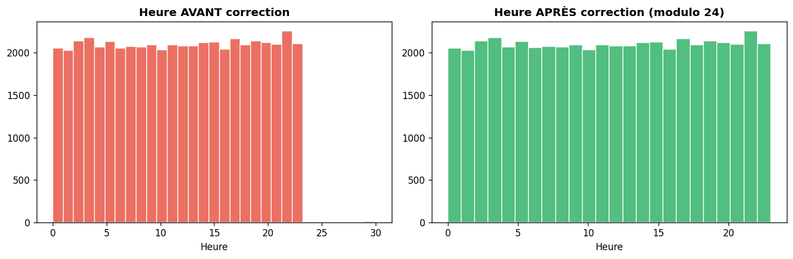
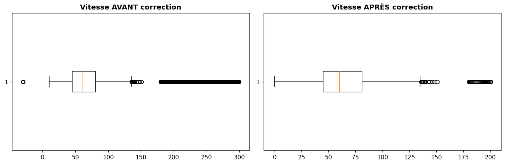
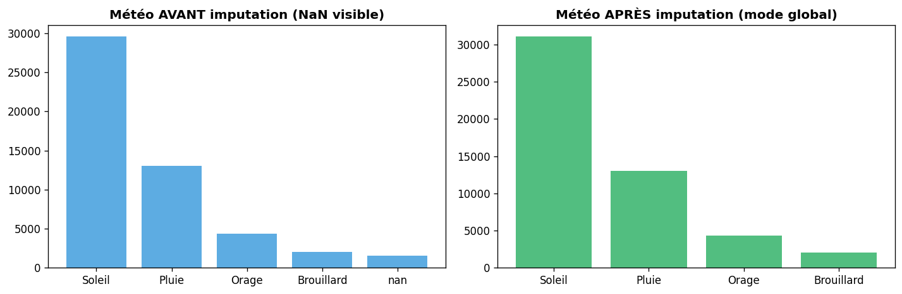
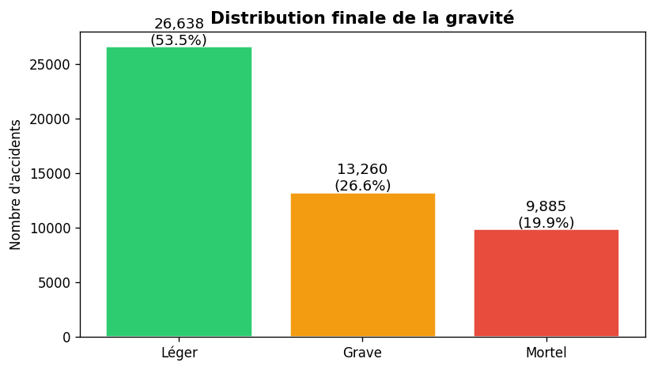

02 — Nettoyage & Prétraitement des Données#
Objectif : Corriger les anomalies, imputer les valeurs manquantes, valider la qualité finale.
Entrée : data/raw/togo_road_accidents_dataset.csv
Sortie : data/processed/accidents_clean.parquet
import sys
sys.path.insert(0, '../src')
import pandas as pd
import numpy as np
import matplotlib.pyplot as plt
import seaborn as sns
from pathlib import Path
import warnings
warnings.filterwarnings('ignore')
from data_preprocessing import (
load_raw, clean_strings, fix_date_column, fix_heure_anomalies,
fix_vitesse_anomalies, fix_cout_negatif, standardize_binary_columns,
impute_missing_values, remove_duplicates, remove_extreme_outliers,
encode_target, run_cleaning_pipeline, data_quality_report
)
from utils import quick_info, validate_schema, GRAVITE_COLORS
plt.rcParams['figure.dpi'] = 120
print('Modules chargés ')
Modules chargés ✓
1. Chargement des données brutes#
df_raw = load_raw('../data/raw/togo_road_accidents_dataset.csv')
quick_info(df_raw)
2026-05-21 19:24:21 | INFO | preprocessing | Chargement des données brutes depuis ../data/raw/togo_road_accidents_dataset.csv...
2026-05-21 19:24:22 | INFO | preprocessing | → 50,500 lignes, 29 colonnes chargées.
============================================================
Shape : 50,500 lignes × 29 colonnes
Mémoire : 59.0 MB
Doublons : 303
Valeurs manquantes (top 10):
etat_route 1,566 (3.1%)
port_ceinture 1,564 (3.1%)
intervention_secours 1,528 (3.0%)
meteo 1,515 (3.0%)
nombre_victimes 1,485 (2.9%)
vitesse_estimee 1,483 (2.9%)
port_casque 1,464 (2.9%)
cause 1,462 (2.9%)
============================================================
2. Étapes de nettoyage (pas à pas)#
# ── Étape 1 : Heures aberrantes ──────────────────────────────────────────
print('Heures hors [0,23] avant :', ((df_raw['heure'] < 0) | (df_raw['heure'] > 23)).sum())
df_step1 = fix_heure_anomalies(df_raw)
print('Heures hors [0,23] après :', ((df_step1['heure'] < 0) | (df_step1['heure'] > 23)).sum())
# Visualisation
fig, axes = plt.subplots(1, 2, figsize=(12, 4))
axes[0].hist(df_raw['heure'], bins=31, color='#e74c3c', alpha=0.8, edgecolor='white')
axes[0].set_title('Heure AVANT correction', fontweight='bold')
axes[0].set_xlabel('Heure')
axes[1].hist(df_step1['heure'], bins=24, color='#27ae60', alpha=0.8, edgecolor='white')
axes[1].set_title('Heure APRÈS correction (modulo 24)', fontweight='bold')
axes[1].set_xlabel('Heure')
plt.tight_layout()
plt.savefig('../reports/figures/02_heure_correction.png', dpi=150, bbox_inches='tight')
plt.show()
2026-05-21 19:24:22 | INFO | preprocessing | Heures aberrantes : 8 → correction par modulo 24.
Heures hors [0,23] avant : 8
Heures hors [0,23] après : 0

# ── Étape 2 : Vitesses aberrantes ─────────────────────────────────────────
print(f'Vitesse max avant : {df_raw["vitesse_estimee"].max():.1f} km/h')
print(f'Vitesse > 200 km/h : {(df_raw["vitesse_estimee"] > 200).sum()}')
df_step2 = fix_vitesse_anomalies(df_step1)
print(f'Vitesse max après : {df_step2["vitesse_estimee"].max():.1f} km/h')
fig, axes = plt.subplots(1, 2, figsize=(12, 4))
axes[0].boxplot(df_raw['vitesse_estimee'].dropna(), vert=False)
axes[0].set_title('Vitesse AVANT correction', fontweight='bold')
axes[1].boxplot(df_step2['vitesse_estimee'].dropna(), vert=False)
axes[1].set_title('Vitesse APRÈS correction', fontweight='bold')
plt.tight_layout()
plt.savefig('../reports/figures/02_vitesse_correction.png', dpi=150, bbox_inches='tight')
plt.show()
2026-05-21 19:24:24 | INFO | preprocessing | Vitesses hors plage [0, 200] : 894 valeurs clampées.
Vitesse max avant : 299.0 km/h
Vitesse > 200 km/h : 423
Vitesse max après : 200.0 km/h

# ── Étape 3 : Imputation des valeurs manquantes ────────────────────────────
print('Valeurs manquantes avant imputation :')
nulls_before = df_step2.isnull().sum()
print(nulls_before[nulls_before > 0])
df_step3 = impute_missing_values(df_step2)
print('\nValeurs manquantes après imputation :')
nulls_after = df_step3.isnull().sum()
print(nulls_after[nulls_after > 0] if (nulls_after > 0).any() else 'Aucune ✓')
Valeurs manquantes avant imputation :
meteo 1515
nombre_victimes 1485
cause 1462
etat_route 1566
vitesse_estimee 1483
port_casque 1464
port_ceinture 1564
intervention_secours 1528
dtype: int64
2026-05-21 19:24:25 | INFO | preprocessing | meteo : 1515 NaN → 'Soleil'
2026-05-21 19:24:25 | INFO | preprocessing | cause : 1462 NaN → 'Inconnue'
2026-05-21 19:24:25 | INFO | preprocessing | etat_route : 1566 NaN → mode par region
2026-05-21 19:24:25 | INFO | preprocessing | vitesse_estimee : 1483 NaN → médiane par type_route
2026-05-21 19:24:25 | INFO | preprocessing | nombre_victimes : 1485 NaN → 1
2026-05-21 19:24:25 | INFO | preprocessing | port_casque : 1464 NaN → 'Oui'
2026-05-21 19:24:25 | INFO | preprocessing | port_ceinture : 1564 NaN → 'Oui'
2026-05-21 19:24:25 | INFO | preprocessing | intervention_secours : 1528 NaN → 40 min
Valeurs manquantes après imputation :
Aucune ✓
# Visualisation de l'imputation : méteo
fig, axes = plt.subplots(1, 2, figsize=(12, 4))
meteo_before = df_step2['meteo'].value_counts(dropna=False)
meteo_after = df_step3['meteo'].value_counts(dropna=False)
axes[0].bar(meteo_before.index.astype(str), meteo_before.values, color='#3498db', alpha=0.8)
axes[0].set_title('Météo AVANT imputation (NaN visible)', fontweight='bold')
axes[1].bar(meteo_after.index.astype(str), meteo_after.values, color='#27ae60', alpha=0.8)
axes[1].set_title('Météo APRÈS imputation (mode global)', fontweight='bold')
plt.tight_layout()
plt.savefig('../reports/figures/02_imputation_meteo.png', dpi=150, bbox_inches='tight')
plt.show()

3. Pipeline complet de nettoyage#
df_clean = run_cleaning_pipeline(
raw_path=Path('../data/raw/togo_road_accidents_dataset.csv'),
save_path=Path('../data/processed/accidents_clean.parquet'),
verbose=True
)
print(f'\nDataset nettoyé : {df_clean.shape}')
2026-05-21 19:24:26 | INFO | preprocessing | ════════════════════════════════════════════════════════════
2026-05-21 19:24:26 | INFO | preprocessing | DÉMARRAGE DU PIPELINE DE NETTOYAGE
2026-05-21 19:24:26 | INFO | preprocessing | ════════════════════════════════════════════════════════════
2026-05-21 19:24:26 | INFO | preprocessing | Chargement des données brutes depuis ..\data\raw\togo_road_accidents_dataset.csv...
2026-05-21 19:24:26 | INFO | preprocessing | → 50,500 lignes, 29 colonnes chargées.
============================================================
Shape : 50,500 lignes × 29 colonnes
Mémoire : 59.0 MB
2026-05-21 19:24:27 | INFO | preprocessing |
[1/8] Nettoyage des chaînes de caractères...
Doublons : 303
Valeurs manquantes (top 10):
etat_route 1,566 (3.1%)
port_ceinture 1,564 (3.1%)
intervention_secours 1,528 (3.0%)
meteo 1,515 (3.0%)
nombre_victimes 1,485 (2.9%)
vitesse_estimee 1,483 (2.9%)
port_casque 1,464 (2.9%)
cause 1,462 (2.9%)
============================================================
2026-05-21 19:24:27 | INFO | preprocessing | [2/8] Correction des dates...
2026-05-21 19:24:27 | INFO | preprocessing | [3/8] Correction des heures aberrantes...
2026-05-21 19:24:27 | INFO | preprocessing | Heures aberrantes : 8 → correction par modulo 24.
2026-05-21 19:24:27 | INFO | preprocessing | [4/8] Correction des vitesses aberrantes...
2026-05-21 19:24:27 | INFO | preprocessing | Vitesses hors plage [0, 200] : 894 valeurs clampées.
2026-05-21 19:24:27 | INFO | preprocessing | [5/8] Correction des coûts négatifs...
2026-05-21 19:24:27 | INFO | preprocessing | [6/8] Standardisation colonnes binaires...
2026-05-21 19:24:27 | INFO | preprocessing | [7/8] Imputation des valeurs manquantes...
2026-05-21 19:24:27 | INFO | preprocessing | meteo : 1515 NaN → 'Soleil'
2026-05-21 19:24:27 | INFO | preprocessing | cause : 1462 NaN → 'Inconnue'
2026-05-21 19:24:27 | INFO | preprocessing | etat_route : 1566 NaN → mode par region
2026-05-21 19:24:27 | INFO | preprocessing | vitesse_estimee : 1483 NaN → médiane par type_route
2026-05-21 19:24:27 | INFO | preprocessing | nombre_victimes : 1485 NaN → 1
2026-05-21 19:24:27 | INFO | preprocessing | port_casque : 1464 NaN → 'Oui'
2026-05-21 19:24:27 | INFO | preprocessing | port_ceinture : 1564 NaN → 'Oui'
2026-05-21 19:24:27 | INFO | preprocessing | intervention_secours : 1528 NaN → 40 min
2026-05-21 19:24:27 | INFO | preprocessing | [8/8] Suppression doublons & outliers...
2026-05-21 19:24:28 | INFO | preprocessing | Doublons supprimés : 500
2026-05-21 19:24:28 | INFO | preprocessing | Lignes aberrantes supprimées : 217
2026-05-21 19:24:28 | WARNING | preprocessing | Problèmes de schéma détectés : {'meteo': ['Orage'], 'type_route': ['Nationale', 'Autoroute'], 'type_accident': ['Collision moto'], 'cause': ['Sortie de route', 'Défaillance mécanique', 'Collision piéton', 'Mauvais état route', 'Inconnue']}
2026-05-21 19:24:28 | INFO | preprocessing |
Données nettoyées :
============================================================
Shape : 49,783 lignes × 30 colonnes
Mémoire : 3.1 MB
Doublons : 0
Valeurs manquantes (top 10):
Aucune valeur manquante ✓
============================================================
2026-05-21 19:24:29 | INFO | utils | DataFrame sauvegardé → ..\data\processed\accidents_clean.parquet (49,783 lignes)
2026-05-21 19:24:29 | INFO | preprocessing | ════════════════════════════════════════════════════════════
2026-05-21 19:24:29 | INFO | preprocessing | PIPELINE DE NETTOYAGE TERMINÉ
2026-05-21 19:24:29 | INFO | preprocessing | ════════════════════════════════════════════════════════════
2026-05-21 19:24:29 | INFO | utils | [Cleaning Pipeline] Temps d'exécution : 3.33s
Dataset nettoyé : (49783, 30)
4. Rapport de qualité avant/après#
quality_report = data_quality_report(df_raw, df_clean)
print('RAPPORT DE QUALITÉ')
print('═' * 40)
print(quality_report.to_string())
quality_report.to_csv('../reports/tables/02_quality_report.csv', encoding='utf-8-sig')
RAPPORT DE QUALITÉ
════════════════════════════════════════
Valeur
Lignes (brut) 50500.00
Lignes (propre) 49783.00
Lignes supprimées 717.00
Taux de rétention (%) 98.58
Colonnes 30.00
Mémoire (MB) 3.15
Valeurs manquantes 0.00
Doublons restants 0.00
5. Validation du schéma#
issues = validate_schema(df_clean)
if issues:
print(' Problèmes de schéma :', issues)
else:
print('✓ Schéma validé — toutes les valeurs catégorielles sont conformes')
# Distribution finale de la cible
target_final = df_clean['gravite'].value_counts()
print('\nDistribution finale de la variable cible :')
print(target_final)
fig, ax = plt.subplots(figsize=(7, 4))
colors = [GRAVITE_COLORS[g] for g in target_final.index]
bars = ax.bar(target_final.index, target_final.values, color=colors, edgecolor='white', linewidth=1.5)
for bar, val in zip(bars, target_final.values):
ax.text(bar.get_x() + bar.get_width()/2, bar.get_height() + 100,
f'{val:,}\n({val/len(df_clean)*100:.1f}%)', ha='center', fontsize=11)
ax.set_title('Distribution finale de la gravité', fontsize=13, fontweight='bold')
ax.set_ylabel('Nombre d\'accidents')
plt.tight_layout()
plt.savefig('../reports/figures/02_target_distribution.png', dpi=150, bbox_inches='tight')
plt.show()
⚠️ Problèmes de schéma : {'meteo': ['Orage'], 'type_route': ['Nationale', 'Autoroute'], 'type_accident': ['Collision moto'], 'cause': ['Sortie de route', 'Défaillance mécanique', 'Collision piéton', 'Mauvais état route', 'Inconnue']}
Distribution finale de la variable cible :
gravite
Léger 26638
Grave 13260
Mortel 9885
Name: count, dtype: int64

print(' Données nettoyées sauvegardées dans data/processed/accidents_clean.parquet')
print(' Prochaine étape : notebook 03_eda_visualization.ipynb')
✓ Données nettoyées sauvegardées dans data/processed/accidents_clean.parquet
→ Prochaine étape : notebook 03_eda_visualization.ipynb